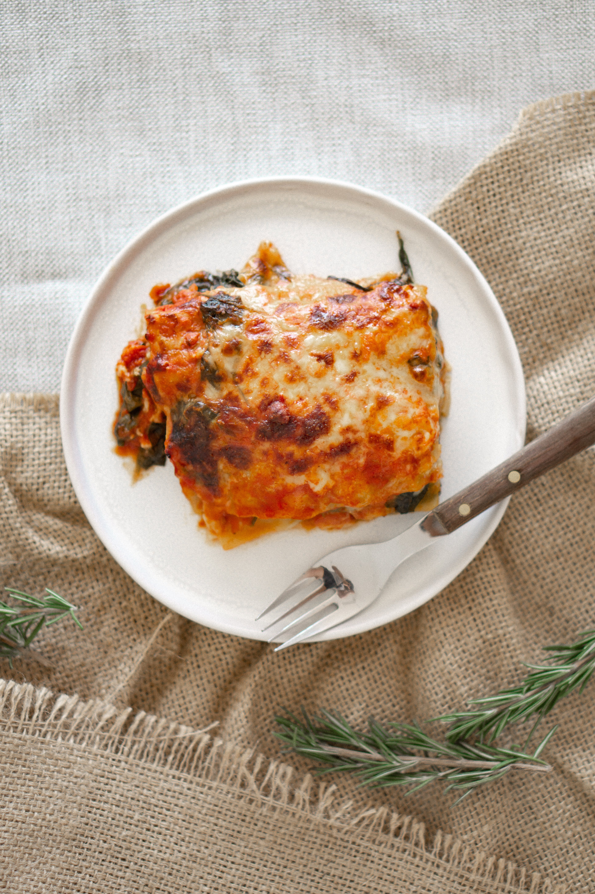

Lasaña de Pollo y Espinacas

Descripción
Una variante reconfortante que mezcla pechuga de pollo desmenuzada y espinacas, salteadas con cebolla y ajo, en una deliciosa lasaña. Las capas de lasaña se combinan con una suave salsa bechamel y queso mozzarella, terminando con un toque de queso parmesano gratinado para un plato sabroso y reconfortante.
Ingredientes
- Láminas de lasaña
- 500g de pechuga de pollo cocida y desmenuzada
- 2 tazas de espinacas frescas
- 2 tazas de salsa bechamel
- 2 tazas de salsa de tomate
- 2 tazas de queso mozzarella rallado
- 1 taza de queso parmesano rallado
- 1 cebolla picada
- 2 dientes de ajo picados
- Aceite de oliva
- Sal, pimienta y hierbas al gusto
Pasos
- Precalienta el horno a 180°C (350°F).
- En una sartén grande, calienta un poco de aceite de oliva a fuego medio. Agrega la cebolla y el ajo, y cocina hasta que estén dorados.
- Agrega las espinacas y cocina hasta que se marchiten. Añade el pollo desmenuzado y mezcla bien. Condimenta con sal, pimienta y hierbas al gusto.
- En una bandeja para horno, coloca una capa delgada de salsa de tomate. Cubre con una capa de láminas de lasaña.
- Agrega una capa de la mezcla de pollo y espinacas, luego una capa de salsa bechamel y queso mozzarella. Repite el proceso hasta llenar la bandeja o terminar con las láminas de lasaña.
- Espolvorea queso parmesano rallado sobre la última capa.
- Cubre la bandeja con papel de aluminio y hornea durante unos 25-30 minutos.
- Retira el papel de aluminio y hornea por otros 10-15 minutos hasta que el queso se dore.
- Deja reposar la lasaña antes de cortarla y servirla.